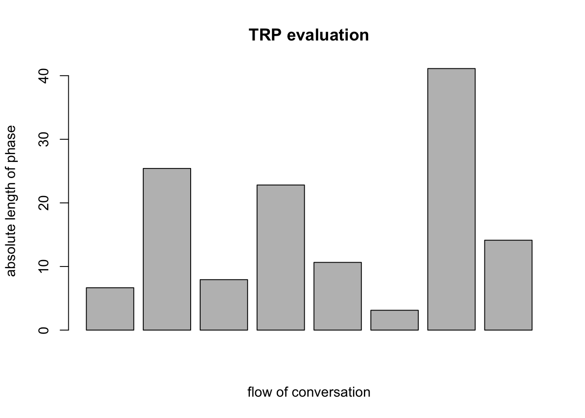
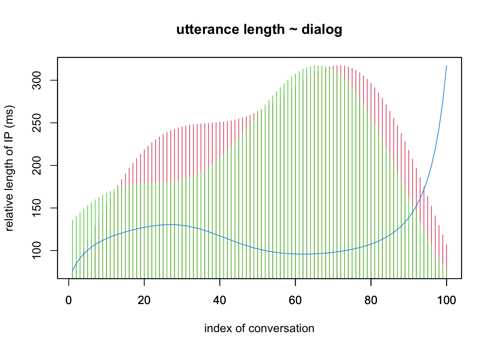
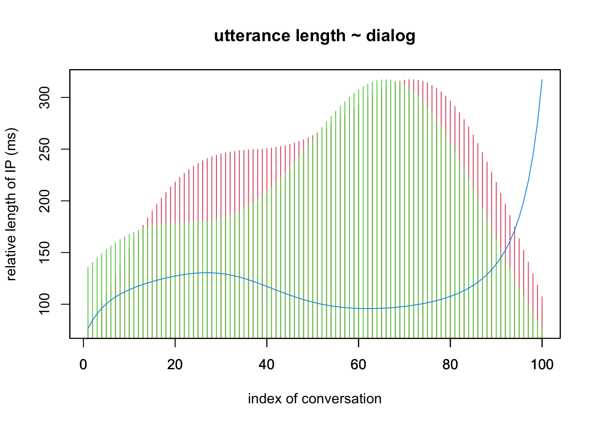

1.
the conversation is part of a 15 minutes planungsgespräch. the
preliminary discussion revealed that one class intended to visit commune
in the future (anschluszseminar) could be one in the section :german as
foreign language: (DAF) that both participants considered relevant to
their curriculum and in continuation of this classes (NPRG) program.
2. the transcript
the dialogue represents minutes 08:42 - 10:45 of the recording
transcribed according to GAT2 conventions using EXMARALDA partitur
editor (Wörner and Schmidt 2014) and ELAN (ELAN
2022).
2.1 basic
2.2 analysis
3. some visualisations & statistics
3.1
Auswertung 1. der TRP (transition relevant places) im Dialogverlauf.
Diese werden hier 2. nach Fourier-Transformation der Positionen
abgebildet, so dasz die frequenzanalysierte (nach Fourier also relative
Länge) der zwischen den TRP liegenden Dialogabschnitten sichtbar ist. 3.
Die relativierte Verlaufkurve der Intonationsphrasenlänge;
rot = SP0, grün = SP1, blau = Differenzkurve.
 

Fourier transformation of data cf. “syuzhet” R-Package: (Jockers 2015)
3.2 some numbers
## speechacts speech time (sec) words
## SP0 70 80 167
## SP1 43 51 71
LS0tCiMtLS0gb2ZmaWNpYWwgLS0tIwojIHNlbWluYXJhcmJlaXQgaW0gU2VtaW5hcjogTmV1cm9wcmFnbWF0aWssIFdTMjIvMjMgRlVCCiMgaW0gRmFjaCBTcHJhY2h3aXNzZW5zY2hhZnRlbgojIHZvbiBTdGVwaGFuIFNjaHdhcnoKIyBBYmdhYmU6IDIwMjItMTEtMjAKCnRpdGxlOiAiTi1QUkcgY29udmVyc2F0aW9uIGFuYWx5c2lzIgpzdWJ0aXRsZTogIk5ldXJvcHJhZ21hdGlrIFdTMjIvMjMgRlVCIChQdWx2ZXJtw7xsbGVyKSIKYXV0aG9yOiAiU3QuIFNjaHdhcnoiCmRhdGU6ICJgciBTeXMuRGF0ZSgpYCIKem90ZXJvOiBBVkxfZHluCm91dHB1dDogCiAgaHRtbF9kb2N1bWVudDoKICAgIHRvYzogeWVzCiAgICB0b2NfZmxvYXQ6CiAgICAgIGNvbGxhcHNlZDogbm8KICAgICAgc21vb3RoX3Njcm9sbDogbm8KICAgIHNlbGZfY29udGFpbmVkOiBGQUxTRSAjVFJVRSBmb3Igc3RhbmRhbG9uZSBodG1sIHBhZ2Uga25pdAogICAgY29kZV9kb3dubG9hZDogVFJVRQogICAgY3NzOiBodHRwczovL2FkYS1zdWIucm90ZWZhZGVuYnVlY2hlci5kZS9za29vbC9wdWJsaWMvZXNzYWlzL1BSRzAxL3N0eWxlX0hBLmNzcwojc3dhcCAvIGRlY29tbWVudCBmZiAuYmliLy5jc3MgcmVmZXJlbmNlcyBmb3Igc2VsZiBjb21waWxlIC5SbWQgdG8gaHRtbAojYmlibGlvZ3JhcGh5OiBodHRwczovL3Jhdy5naXRodWJ1c2VyY29udGVudC5jb20vZXN0ZWVzY2h3YXJ6L0RIX2Vzc2Fpcy9tYWluL3NlY3Rpb25zL0REL2tsZW1tX0hBL3RvcC9rbGVtbS5iaWIKICAgIyBjc3M6IGh0dHBzOi8vYWRhLXN1Yi5yb3RlZmFkZW5idWVjaGVyLmRlL3Nrb29sL3B1YmxpYy9wYXBlcnMvMDExL3N0eWxlX0hBLmNzcwojYmlibGlvZ3JhcGh5OiBodHRwczovL2FwaS56b3Rlcm8ub3JnL2dyb3Vwcy80NzEzMjQ2L2NvbGxlY3Rpb25zL1pXNk1DVTJKL2l0ZW1zL3RvcD9mb3JtYXQ9YmlibGF0ZXgKYmlibGlvZ3JhcGh5OiBQUkdfQ0EuYmliCi0tLQpgYGB7ciBzZXR1cCwgaW5jbHVkZT1GQUxTRX0Ka25pdHI6Om9wdHNfY2h1bmskc2V0KGVjaG8gPSBUUlVFKQpgYGAKCi0tLQoKYGBge3IgZXZhbD1UUlVFLCBlY2hvPUZBTFNFLCB3YXJuaW5nPUZBTFNFLG1lc3NhZ2U9RkFMU0V9CiNsaWJyYXJ5KGpzb25saXRlKQpsaWJyYXJ5KHN5dXpoZXQpCmxpYnJhcnkocmVhZHIpCmxpYnJhcnkoeGZ1bikKCnJvb3Q8LSJ+L2JveEhLVy8yMVMvREgvIgpleHBvPC1wYXN0ZTAocm9vdCwibG9jYWwvQ0EvUFJHL2V4cG8vIikKI3NldHdkKGxvY2FsKQojc3JjPC0id29sZl9GRl8xLmpzb24iCiNzcmM8LXBhc3RlMChsb2NhbCwid29sZl9GRi1MRU5fMS5qc29uIikKIyMjCiNtaW5pCiNzZXR3ZCgifi9ib3hIS1cvMjFTL0RILyIpCiNsYXBzaSwgZXdhCiNzZXR3ZCgifi9ib3hIS1cvVU5JLzIxUy9ESC8iKQpgYGAKCiMjIDEuIAp0aGUgY29udmVyc2F0aW9uIGlzIHBhcnQgb2YgYSAxNSBtaW51dGVzIHBsYW51bmdzZ2VzcHLDpGNoLiB0aGUgcHJlbGltaW5hcnkgZGlzY3Vzc2lvbiByZXZlYWxlZCB0aGF0IG9uZSBjbGFzcyBpbnRlbmRlZCB0byB2aXNpdCBjb21tdW5lIGluIHRoZSBmdXR1cmUgKGFuc2NobHVzenNlbWluYXIpIGNvdWxkIGJlIG9uZSBpbiB0aGUgc2VjdGlvbiA6Z2VybWFuIGFzIGZvcmVpZ24gbGFuZ3VhZ2U6IChEQUYpIHRoYXQgYm90aCBwYXJ0aWNpcGFudHMgY29uc2lkZXJlZCByZWxldmFudCB0byB0aGVpciBjdXJyaWN1bHVtIGFuZCBpbiBjb250aW51YXRpb24gb2YgdGhpcyBjbGFzc2VzIChOUFJHKSBwcm9ncmFtLgoKIyMgMi4gdGhlIHRyYW5zY3JpcHQKdGhlIGRpYWxvZ3VlIHJlcHJlc2VudHMgbWludXRlcyAwODo0MiAtIDEwOjQ1IG9mIHRoZSByZWNvcmRpbmcgdHJhbnNjcmliZWQgYWNjb3JkaW5nIHRvIEdBVDIgY29udmVudGlvbnMgdXNpbmcgRVhNQVJBTERBIHBhcnRpdHVyIGVkaXRvciBbW0B3b3JuZXJfZXhtYXJhbGRhXzIwMTRdXShodHRwczovL2V4bWFyYWxkYS5vcmcvZGUvKSBhbmQgRUxBTiBbW0BlbGFuX2VsYW5fMjAyMl1dKGh0dHBzOi8vYXJjaGl2ZS5tcGkubmwvdGxhL2VsYW4pLgoKIyMjIyAyLjEgYmFzaWMKYGBgIHs9aHRtbH0KCjxpZnJhbWUgc3JjPSJwcmltZS9DQV9zY2huaXBzZWxfMDAxLjIudHh0IiBzdHlsZT0iYm9yZGVyOjJweCBzb2xpZCBibGFjazsiIHdpZHRoPSIxMDAlIiBoZWlnaHQ9IjMwMHB4Ij48L2lmcmFtZT4KYGBgCgojIyMjIDIuMiBhbmFseXNpcwpgYGAgez1odG1sfQoKPGlmcmFtZSBzcmM9InByaW1lL0NBX3NjaG5pcHNlbF8wMDEuaHRtbCIgc3R5bGU9ImJvcmRlcjoycHggc29saWQgYmxhY2s7IiB3aWR0aD0iMTAwJSIgaGVpZ2h0PSIzMDBweCI+PC9pZnJhbWU+CmBgYAoKIyMgMy4gc29tZSB2aXN1YWxpc2F0aW9ucyAmIHN0YXRpc3RpY3MKIyMjIDMuMQpBdXN3ZXJ0dW5nIDEuIGRlciBUUlAgKHRyYW5zaXRpb24gcmVsZXZhbnQgcGxhY2VzKSBpbSBEaWFsb2d2ZXJsYXVmLiBEaWVzZSB3ZXJkZW4gaGllciAyLiBuYWNoIEZvdXJpZXItVHJhbnNmb3JtYXRpb24gZGVyIFBvc2l0aW9uZW4gYWJnZWJpbGRldCwgc28gZGFzeiBkaWUgZnJlcXVlbnphbmFseXNpZXJ0ZSAobmFjaCBGb3VyaWVyIGFsc28gcmVsYXRpdmUgTMOkbmdlKSBkZXIgendpc2NoZW4gZGVuIFRSUCBsaWVnZW5kZW4gRGlhbG9nYWJzY2huaXR0ZW4gc2ljaHRiYXIgaXN0LiAzLiBEaWUgcmVsYXRpdmllcnRlIFZlcmxhdWZrdXJ2ZSBkZXIgSW50b25hdGlvbnNwaHJhc2VubMOkbmdlOyBgcm90ID0gU1AwLCBncsO8biA9IFNQMSwgYmxhdSA9IERpZmZlcmVuemt1cnZlYC4KCmBgYHtyIGV2YWw9VFJVRSwgZWNobz1GQUxTRSwgd2FybmluZz1GQUxTRSxtZXNzYWdlPUZBTFNFfQojcGF0aDE8LSJsb2NhbC9DQS9QUkcvZXhwby8iCnNyYzwtbGlzdC5maWxlcyhleHBvKQpzcmM8LXBhc3RlMChleHBvLHNyYykKdHJhbnNfbnM8LWMoInRpZXIiLCJ0eXBlIiwic3BlYWtlciIsInRleHQiLCJzdGFydCIsImVuZCIsImNhdGVnb3J5IiwibGFiZWwiKQojZHRhPC1yZWFkLmNzdjIoc3JjLGhlYWRlcj1GLHNlcCA9ICJcdCIsY29sLm5hbWVzID0gdHJhbnNfbnMpCmR0YSA8LSByZWFkX2RlbGltKHBhc3RlMChleHBvLCJQUkdfQ0FfZWxhblNGLWNoYXQwMDJFb3V0RVgtT1gtRVguY3N2IiksIAogICAgICAgICAgICAgICAgICBkZWxpbSA9ICJcdCIsIGVzY2FwZV9kb3VibGUgPSBGQUxTRSwgCiAgICAgICAgICAgICAgICAgIGNvbF9uYW1lcyA9IHRyYW5zX25zLCB0cmltX3dzID0gVFJVRSkKCiMjIwp0cnA8LWR0YSRjYXRlZ29yeT09IlRSUCIKdHJwMTwtZHRhJHN0YXJ0W3RycF0KdHJwMjwtYyhkdGEkc3RhcnRbMV0sdHJwMSkKdHJwMzwtYyh0cnAxLGR0YSRlbmRbbGVuZ3RoKGR0YSRlbmQpXSkKdHJwNDwtdHJwMy10cnAyCmJhcnBsb3QodHJwNCwgbWFpbiA9ICJUUlAgZXZhbHVhdGlvbiIseWxhYiA9ICJhYnNvbHV0ZSBsZW5ndGggb2YgcGhhc2UiLHhsYWI9ImZsb3cgb2YgY29udmVyc2F0aW9uIikKbGlicmFyeShzeXV6aGV0KQp0cnA1PC1nZXRfdHJhbnNmb3JtZWRfdmFsdWVzKHRycDQpCiNwbG90KHRycDUsdHlwZSA9ICJoIikKcGxvdCh0cnA1LHR5cGU9ImgiLG1haW49IlRSUCBldmFsdWF0aW9uIix5bGFiPSJyZWxhdGl2ZSBsZW5ndGggb2YgcGhhc2UiLHhsYWI9ImluZGV4IG9mIGNvbnZlcnNhdGlvbiIsY29sPTIpCnBvaW50cyh0cnA1LCBjZXggPSAuMiwgY29sID0gImRhcmsgcmVkIikKIyMjd2tzLgpzcGswPC1kdGEkc3BlYWtlcj09IlNQS19TUDAiJmR0YSRjYXRlZ29yeT09Im1haW4iCnNwazE8LWR0YSRzcGVha2VyPT0iU1BLX1NQMSImZHRhJGNhdGVnb3J5PT0ibWFpbiIKc3BrMjwtZHRhJGVuZFtzcGswXQpzcGszPC1kdGEkZW5kW3NwazFdCnNwazQ8LWR0YSRzdGFydFtzcGswXQpzcGs1PC1zcGsyLXNwazQgIwpzcGVlY2hBMDwtc3VtKHNwazApCnNwZWVjaEExPC1zdW0oc3BrMSkKCiNzcGs1W3NwazBdCiMgY2F0KCJzcGVlY2ggYWN0cyBNOiAiLHNwZWVjaEEwLCJcbiIpCiMgY2F0KCJzcGVlY2ggYWN0cyBGOiAiLHNwZWVjaEExLCJcbiIpCiNzdW0oc3BrMSkKc3BrNjwtZHRhJHN0YXJ0W3NwazFdCnNwazc8LXNwazMtc3BrNgpzdW1TUEsxPC1zdW0oc3BrNykKc3VtU1BLMDwtc3VtKHNwazUpCiMgY2F0KCJhYnNvbHV0ZSB0aW1lIHNwZWVjaCBhY3RzIE06ICIsc3VtU1BLMCwiXG4iKQojIGNhdCgiYWJzb2x1dGUgdGltZSBzcGVlY2ggYWN0cyBGOiAiLHN1bVNQSzEsIlxuIikKCnNwazg8LWdldF90cmFuc2Zvcm1lZF92YWx1ZXMoc3BrNSkKc3BrOTwtZ2V0X3RyYW5zZm9ybWVkX3ZhbHVlcyhzcGs3KQpwbG90KHNwazgsdHlwZT0iaCIsbWFpbj0idXR0ZXJhbmNlIGxlbmd0aCB+IGRpYWxvZyIseWxhYj0icmVsYXRpdmUgbGVuZ3RoIG9mIElQIChtcykiLHhsYWI9ImluZGV4IG9mIGNvbnZlcnNhdGlvbiIsY29sPTIpCnBhcihuZXc9VCkKcGxvdChzcGs5LHR5cGU9ImgiLGFubiA9IEYsY29sPTMseWF4dD0ibiIpCnNwazEwPC0oMS9zcGs5LTEvc3BrOCkKI3NwazEwPC1zcXJ0KHNwazEwKnNwazEwKQojc3BrMTA8LWdldF90cmFuc2Zvcm1lZF92YWx1ZXMoc3BrMTApCnBhcihuZXc9VCkKcGxvdChzcGsxMCx0eXBlPSJsIixhbm4gPSBGLGNvbD00LHlheHQ9Im4iKQpgYGAKCkZvdXJpZXIgdHJhbnNmb3JtYXRpb24gb2YgZGF0YSBjZi4gInN5dXpoZXQiIFItUGFja2FnZTogW1tAam9ja2Vyc19yZXZlYWxpbmdfMjAxNV1dKGh0dHBzOi8vd3d3Lm1hdHRoZXdqb2NrZXJzLm5ldC8yMDE1LzAyLzAyL3N5dXpoZXQvKQoKIyMjIDMuMiBzb21lIG51bWJlcnMKYGBge3IgZWNobyA9IEZBTFNFLHdhcm5pbmc9RkFMU0V9CiMjI3NlbWFudGljIHN0YXRpc3RpY3MKbGlicmFyeShzdHJpbmdpKQp0c3AwPC1kdGEkdGV4dFtzcGswXQp0c3AwMTwtdW5saXN0KHN0cmlfc3BsaXQodHNwMCxyZWdleCA9ICIgIikpCnJlZ3gxPC0iW15BLVphLXrDpMO2w7xdIgp0c3AwMjwtZ3N1YihyZWd4MSxOQSx0c3AwMSkKdG5hPC0haXMubmEodHNwMDIpCndvcmRzX3NwazA8LXN1bSh0bmEpCgp0c3AwPC1kdGEkdGV4dFtzcGsxXQp0c3AwMTwtdW5saXN0KHN0cmlfc3BsaXQodHNwMCxyZWdleCA9ICIgIikpCnJlZ3gxPC0iW15BLVphLXrDpMO2w7xdIgp0c3AwMjwtZ3N1YihyZWd4MSxOQSx0c3AwMSkKdG5hPC0haXMubmEodHNwMDIpCndvcmRzX3NwazE8LXN1bSh0bmEpCgojbGVuZ3RoKHRzcDAxKQpzcGV2YWw8LWRhdGEuZnJhbWUoKQpzcGV2YWw8LWNiaW5kKCJzcGVlY2hhY3RzIj1jKHNwZWVjaEEwLHNwZWVjaEExKSwic3BlZWNoIHRpbWUgKHNlYykgIj1jKHJvdW5kKHN1bVNQSzApLHJvdW5kKHN1bVNQSzEpKSwid29yZHMiPWMod29yZHNfc3BrMCx3b3Jkc19zcGsxKSkKcm93bmFtZXMoc3BldmFsKTwtYygiU1AwIiwiU1AxIikKcHJpbnQoc3BldmFsKQojeGZ1bjo6cGtnX2xvYWQyKGMoImh0bWx0b29scyIsICJtaW1lIikpCiN4ZnVuOjplbWJlZF9maWxlKCdOLVBSR19DQV8wMDEuUm1kJykKCmBgYAoKCiMjIEIuIFJFRjoK